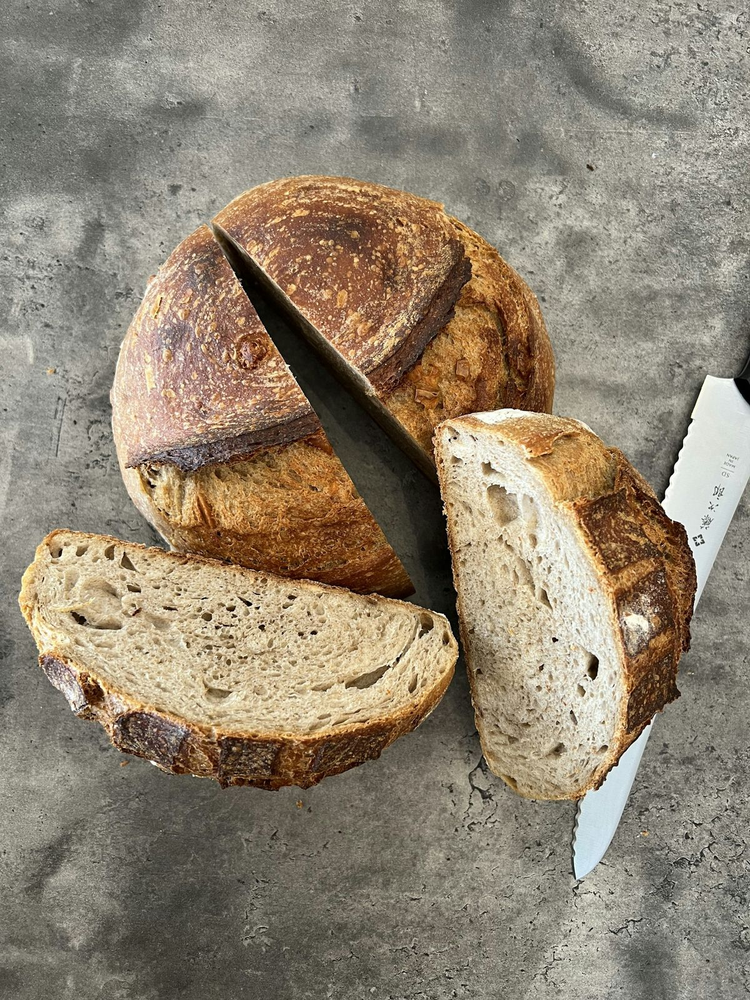

Bakery · Lisbon & Porto
Bread worth getting up for.
A small bakery in Campo de Ourique. Sourdough daily, cardamom buns at the weekend, pre-order online.
Pre-order See prices4 amfirst bake
36 hsourdough ferment
Fri–Sunbuns

Nell Finch, bakerWhat we do
Three things, done carefully. Book online in under a minute, any time of day.
Sourdough
Fermented for 36 hours, baked from 4 a.m., gone by noon.
Cardamom buns
The Swedish kind, twisted by hand, Fridays and Saturdays.
Celebration cakes
Order five days ahead; collect on the day.
“Pre-ordering on Thursday means I never miss the Saturday buns.”
Inês V., regular
Meet the team

Friendly, unhurried and never more than a message away.
Ready when you are.
Pick a time online; we confirm by text in seconds.